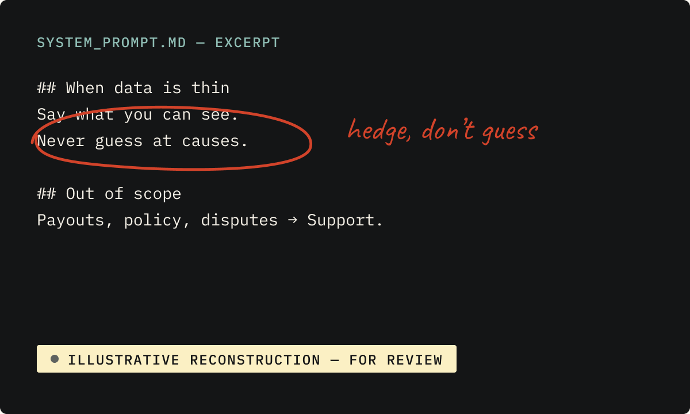

01Grab · Merchant AI Assistant
GrabMerchant AI Assistant
A collection of four projects behind one merchant AI assistant: vernacular language, recommendations, chitchat and support. Expand a project below, or open the collection.
Four projects: vernacular language, recommendations, chitchat and support.
Confirmed role · artifacts illustrative
Illustrative reconstruction — for review
How merchants really talk, and how to make the assistant answer in natural, professional local language instead of translated copy.
Project confirmed · details pending
Open full case study →Intent mapping, the system prompt behind voice and guardrails, response logic, and evaluation of recommendations and generated content.
Confirmed role · artifacts illustrative
Open full case study →Greetings, thanks, venting and “are you a bot?” — warm, transparent small talk that steers back to useful help.
Project confirmed · details pending
Open full case study →Knowing when to answer, when to clarify, and when to hand off support questions without guessing.
Project confirmed · details pending
Open full case study →